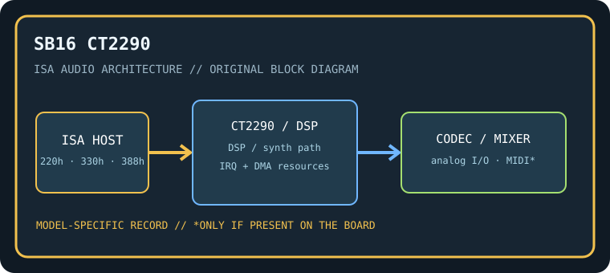

[ INDIVIDUAL COMPONENT // SOUND HARDWARE ]
Creative Sound Blaster 16 (CT2290)
CT2290 is cataloged separately from CT2230: use the board silkscreen and manual revision, not the Sound Blaster 16 family label, to identify resources and populated components.

Model-specific specifications
| Catalog identity / chipset / DSP | Creative Sound Blaster 16 (CT2290). Creative Sound Blaster 16 DSP architecture with board-specific firmware revision; Yamaha YMF262 OPL3 FM where fitted, verified by the card’s chip markings. |
|---|---|
| Audio codec / conversion | 16-bit PCM conversion through the CT2290 analog input/output circuitry. Component substitutions exist within SB16 production; the physical codec/DAC marking takes precedence over family summaries. |
| Bus / I/O / ports | 16-bit ISA. Typical Sound Blaster base 220h; MIDI UART 330h and OPL3 388h are conventional defaults. Confirm assigned decode ranges in setup utility/manual. |
| IRQ | Common configurable SB16 IRQ choices include 5, 7, and 10; distinguish CT2290 switch/jumper configuration from PnP siblings. |
| DMA | 8-bit DMA low channel (often 1) plus 16-bit DMA high channel (often 5); exact selected channels must match the host and BLASTER settings. |
| Driver / operating system | Creative DOS setup/diagnostics and DOS Sound Blaster interface; period Windows drivers depend on the exact resource mode. Treat Windows NT and later support as unsupported unless independently verified. |
| Motherboard compatibility | Requires a 16-bit ISA slot on an ISA-capable PC-compatible motherboard. Check IRQ/DMA reservations, PnP BIOS behavior if present, and chipset bus timing; do not infer successful operation from physical slot fit. |
| Sound standards / interfaces | Sound Blaster 16 8/16-bit PCM and AdLib/OPL3; MIDI UART port follows MPU-401-compatible software conventions. |
| Connectors / power | ISA slot power; use only the analog, MIDI, CD-audio, and auxiliary connectors physically present on this exact board. Inspect the edge bracket, keyed headers, PCB revision, and manual before connecting. |
Compatibility & preservation notes
CT2290 is cataloged separately from CT2230: use the board silkscreen and manual revision, not the Sound Blaster 16 family label, to identify resources and populated components. The precise DSP/codec package, firmware, resource assignment, and OS driver release must be matched to the physical SKU. Record the actual base port, IRQ, DMA channels, driver version, motherboard chipset, and BIOS configuration used in a working test rather than copying family defaults.
- Photograph the complete model number, PCB revision, major IC markings, jumpers, connectors, and any daughterboard before service.
- Check DMA and IRQ reservations against storage, serial/parallel, and other ISA devices; test PCM, synthesis, and MIDI functions independently.
- Power down and unplug the host before fitting/removing ISA hardware. Keep the exact manual and original setup/driver media with the specimen.
Manufacturer manuals & archival sources
- Internet Archive — Creative Sound Blaster 16 CT2290 manualArchive catalog search for original manufacturer-authored manual/setup documentation for this model; confirm the full SKU and revision in any scan.
- Internet Archive — Creative Sound Blaster 16 CT2290 DOS driver diskArchive catalog search for preserved manufacturer driver, utility, or bundled software media for this specific board.
- Internet Archive — Creative Sound Blaster 16 CT2290 documentation archiveAdditional model-specific catalog records and manuals; use the physical board marking to exclude adjacent revisions and related products.
Archive search links are discovery records rather than claims that one particular scan is an original; verify provenance, revision and completeness before relying on a scanned setup guide.